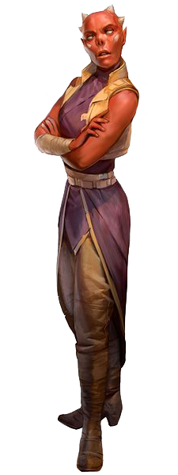

<!DOCTYPE html>
<html>

<head>
  <title>Elomin</title>

  <meta charset="utf-8">
  <meta name="viewport" content="width=device-width, initial-scale=1, shrink-to-fit=no">

  <link rel="stylesheet" href="https://stackpath.bootstrapcdn.com/bootstrap/4.1.3/css/bootstrap.min.css" integrity="sha384-MCw98/SFnGE8fJT3GXwEOngsV7Zt27NXFoaoApmYm81iuXoPkFOJwJ8ERdknLPMO"
    crossorigin="anonymous">
  <link rel="stylesheet" type="text/css" href="style.css">
</head>

<body>

  <nav class="navbar navbar-expand-lg navbar-dark bg-dark">
    <a class="navbar-brand" href="#">Star Wars Tabletop Codex</a>
    <button class="navbar-toggler" type="button" data-toggle="collapse" data-target="#navbarSupportedContent" aria-controls="navbarSupportedContent"
      aria-expanded="false" aria-label="Toggle navigation">
      <span class="navbar-toggler-icon"></span>
    </button>

    <div class="collapse navbar-collapse" id="navbarSupportedContent">
      <ul class="navbar-nav mr-auto">
        <li class="nav-item">
          <a class="nav-link" href="index.html">Home</a>
        </li>
        <li class="nav-item active" id="nav_active">
          <a class="nav-link" href="species_index.html">Species <span class="sr-only">(current)</span></a>
        </li>
        <li class="nav-item">
          <a class="nav-link" href="equipment_index.html">Equipment</a>
        </li>
        <li class="nav-item">
          <a class="nav-link" href="class_index.html">Classes</a>
        </li>
      </ul>
    </div>
  </nav>


  <br>
  <div class="Container" id="main_box">

    <a href="species_index.html"><button type="button" class="btn btn-outline-dark" id="back_button">&#9668; Back</button></a>

    <h1>Elomin</h1>
    
    <br>

    <div class="container col-8">

      <div class="card">
        <div class="card-header" id="headingOne">
          <h5 class="mb-0">
            <button class="btn btn-link btn-block" type="button" data-toggle="collapse" data-target="#collapseZero" aria-expanded="false"
              aria-controls="collapseZero" style="color: white; text-decoration: none; text-align: left">
              Stats
            </button>
          </h5>
        </div>
        <div id="collapseZero" class="collapse" aria-labelledby="headingZero">
          <div class="card-body">
            <div class="row justify-content-md-center">
              <div class="col col-lg-2 align" align="center">
                <strong>Bra</strong>
              </div>
              <div class="col col-lg-2" align="center">
                <strong>Agi</strong>
              </div>
              <div class="col col-lg-2" align="center">
                <strong>Int</strong>
              </div>
              <div class="col col-lg-2" align="center">
                <strong>Cun</strong>
              </div>
              <div class="col col-lg-2" align="center">
                <strong>Will</strong>
              </div>
              <div class="col col-lg-2" align="center">
                <strong>Pre</strong>
              </div>
            </div>
            <div class="row justify-content-md-center">
              <div class="col col-lg-2" align="center">
                2
              </div>
              <div class="col col-lg-2" align="center">
                2
              </div>
              <div class="col col-lg-2" align="center">
                3
              </div>
              <div class="col col-lg-2" align="center">
                2
              </div>
              <div class="col col-lg-2" align="center">
                1
              </div>
              <div class="col col-lg-2" align="center">
                2
              </div>
            </div>
            <br>
            <div class="row justify-content-md-center">
              <div class="col col-lg-6">
                <b>Wound Threshold: </b>9 + Brawn
              </div>
            </div>
            <div class="row justify-content-md-center">
              <div class="col col-lg-6">
                <b>Strain Threshold: </b>10 + Willpower
              </div>
            </div>
            <div class="row justify-content-md-center">
              <div class="col col-lg-6">
                <b>Starting Experience: </b>105 XP
              </div>
            </div>
            <div class="row justify-content-md-center">
              <div class="col col-lg-6">
                <p><b>Special Abilities: </b>Elomin begin the game with one rank in <u>Charm</u> and one rank in <u>Knowledge
                    (Education)
                  </u>. They still may not train Charm or Knowledge (Education) above rank 2 during character creation.</p>
              </div>
            </div>
          </div>
        </div>
      </div>

    </div>
    <br>
    <p>The Eloms and <b>Elomin</b> share similar names and the same homeworld, but are physically and culturally very different
      species. The Elomin are tall and exclusively bipedal, with physical traits similar to those of other humanoid species
      in the galaxy. The Eloms are shorter, stockier, and covered in fur, and have a large head with widespread eyes. The
      Elomin were known first to the rest of the galaxy, after Republic scouts first made contact with the world. In fact,
      the surface dwelling Elomin were themselves ignorant of the Eloms’ existence until the former pursued extensive mining
      efforts and inadvertently crashed into the Eloms’ underground territories. The Elomin were not keen to share their
      cold, dry world, but eventually yielded to Republic pressure. The two species pursue a separate existence from each
      other whenever possible.</p>
    <br>
    <div class="accordion" id="accordionExample">

      <div class="card">
        <div class="card-header" id="headingOne">
          <h5 class="mb-0">
            <button class="btn btn-link btn-block" type="button" data-toggle="collapse" data-target="#collapseOne" aria-expanded="false"
              aria-controls="collapseOne" style="color: white; text-decoration: none; text-align: left">
              Physiology
            </button>
          </h5>
        </div>
        <div id="collapseOne" class="collapse" aria-labelledby="headingOne">
          <div class="card-body">
            <p>The Elomin are tall humanoids with thin heads crowned by four distinctive horns. Away from their homeworld,
              they are occasionally mistaken for Zabraks, who are more common across the galaxy. The Elomin have large, pointed
              ears and nearly solid-colored, bright eyes of a wide variety of hues. Their skin color ranges from black to
              brighter shades of red. Their fingers have small sharp, claw-like nails.</p>
            <p>Despite long involvement in the Republic and the Empire, many Elomin prefer working on their own or with other
              Elomin whenever possible. These xenopho￾bic tendencies also play into their dealings with the Eloms. However,
              in spite of their insular societal ten￾dencies, many individual Elomin are driven by a thirst for knowledge
              that takes them into the wider galaxy.</p>
          </div>
        </div>
      </div>

      <div class="card">
        <div class="card-header" id="headingTwo">
          <h5 class="mb-0">
            <button class="btn btn-link btn-block" type="button" data-toggle="collapse" data-target="#collapseTwo" aria-expanded="false"
              aria-controls="collapseTwo" style="color: white; text-decoration: none; text-align: left">
              Society
            </button>
          </h5>
        </div>
        <div id="collapseTwo" class="collapse" aria-labelledby="headingTwo">
          <div class="card-body">
            <p>The Elomin live in politically divided lands, with countries and cities. They actively participated in galactic
              society and were members of the Republic long before their discovery of the Elom. Joining the former Republic
              advanced Elomin technology to a very advanced space age in a short time. The Elomin pursue patterns of logic
              and puzzle out the ways of the universe. They are capable of reordering their thinking when presented with
              enough evidence, but they can stubbornly hold to previous ideas and ignore new discoveries or advances until
              it is overwhelming. This dogged adherence to a well-established order cemented the Elomin stance after the
              initial discovery of the Eloms. The decree recognizing the Eloms’ sentience forced the Elomin to formally acknowledge
              the reality. It has taken years of Imperial abuse for the Elomin to acknowledge that they now must turn to
              their underground neighbors for assistance so that both species can survive.</p>
          </div>
        </div>
      </div>

      <div class="card">
        <div class="card-header" id="headingThree">
          <h5 class="mb-0">
            <button class="btn btn-link btn-block" type="button" data-toggle="collapse" data-target="#collapseThree" aria-expanded="false"
              aria-controls="collapseThree" style="color: white; text-decoration: none; text-align: left">
              Homeworld
            </button>
          </h5>
        </div>
        <div id="collapseThree" class="collapse" aria-labelledby="headingThree">
          <div class="card-body">
            <p><b>Elom</b> is a frigidly cold desert world. Elomin settlements and cities dot the surface. Their cities are
              as technologically advanced as those found on most Imperial worlds. The planet is best known as a source of
              lommite, which is used in the manufacture of transparisteel windows for starships and other craft. Originally
              an industry contracted out to offworld mining operators, it is now controlled by the Empire. Whereas the original
              agreements tried to preserve and respect the planet’s environment, the Imperials place efficiency and production
              well above local concerns. The steady, continued destruction of vast areas of their world trouble and anger
              both the Elomin and Eloms. Both have been powerless to slow it down, let alone bring it to a halt.</p>
            <p>Elomin cities and towns are clustered in the more hospitable environments around the harsher deserts. Mining
              operations are farther afield, given that mines close to the oldest cities were depleted long ago. Imperial
              interests and operations focus on the mines. Imperials in the cities have no qualms about forcing Elomin into
              service as miners. Banishment to the mines is a common and cruel form of punishment for anyone who opposes
              the Empire or offends the wrong Imperial official. However, reasons for hauling someone away are just a formality,
              and the Elomin understand that anyone could be next.</p>
            <p>The Empire has largely ignored the Eloms’ deep cities, located far below the planet’s surface. The cities
              have varying levels of technology, depending on the location and even the neighborhood within a settlement.
              Most advanced technology is imported from the Elomin and sometimes beyond. Many cities, remote caverns, and
              dwellings are connected by natural and Elom-constructed tunnels. The tunnels range in size from those requiring
              single file passage, to more sophisticated varieties with paved floors and reinforced roofs. Some are large
              enough to allow for speeder traffic. Many of the cities and tunnels are so far underground that the Imperials
              have difficulty detecting them, let alone setting up surveillance. The cities are largely home to just the
              Eloms. However, some t Elomin rescued from Imperial mining efforts have been allowed to live among the Eloms
              indefinitly.
            </p>
          </div>
        </div>
      </div>
      <div class="card">
        <div class="card-header" id="headingFour">
          <h5 class="mb-0">
            <button class="btn btn-link btn-block" type="button" data-toggle="collapse" data-target="#collapseFour" aria-expanded="false"
              aria-controls="collapseFour" style="color: white; text-decoration: none; text-align: left">
              Language
            </button>
          </h5>
        </div>
        <div id="collapseFour" class="collapse" aria-labelledby="headingFour">
          <div class="card-body">
            <p>The Elomin speak a language much closer to Basic than the Eloms, and most Elomin struggle to learn the language
              of their neighbors The few Elomin who make the effort to learn Elom are usually those who end up living with
              the Eloms after rescue from the mines or seek out Elom enclaves to learn more about them.</p>
          </div>
        </div>
      </div>
      <div class="card">
        <div class="card-header" id="headingFive">
          <h5 class="mb-0">
            <button class="btn btn-link btn-block" type="button" data-toggle="collapse" data-target="#collapseFive" aria-expanded="false"
              aria-controls="collapseFive" style="color: white; text-decoration: none; text-align: left">
              Life in the Alliance
            </button>
          </h5>
        </div>
        <div id="collapseFive" class="collapse" aria-labelledby="headingFive">
          <div class="card-body">
            <p>The Elomin are much more motivated to fight the Empire, especially those who escape forced labor in the mines.
              However, many who are willing to fight the Empire are unable to join up because they are trapped on Elom.</p>
          </div>
        </div>
      </div>
      <div class="card">
        <div class="card-header" id="headingSix">
          <h5 class="mb-0">
            <button class="btn btn-link btn-block" type="button" data-toggle="collapse" data-target="#collapseSix" aria-expanded="false"
              aria-controls="collapseSix" style="color: white; text-decoration: none; text-align: left">
              Elom, The Empire, and The Rebel Alliance
            </button>
          </h5>
        </div>
        <div id="collapseSix" class="collapse" aria-labelledby="headingSix">
          <div class="card-body">
            <p>When a world has a vitally important resource for the Imperial military industrial complex, the Empire takes
              a great and active interest in that resource’s unhindered acquisition and production. Elom is but one of many
              worlds that suffers under Imperial production edicts and quotas. The Empire took control of Elom’s important
              lommite mines and production sites years ago. They enslaved many of the Elomin to work in the mines. The never-ending,
              demanding quotas require a relentless pace of work. Imperial officials continually squeeze more efficiency
              out of the entire process. These brutal methods have cost innumerable Elomin lives.</p>
            <p>The Elomin struggle hasn’t gone unnoticed. The Eloms quickly learned over the years that they were sometimes
              in a position to aid their neighbors. What likely started as a relief effort eventually turned into wholesale
              rescue operations to whisk Elomin away from the mines and into the Eloms’ tunnels. The Eloms must take great
              care in finding a balance between freeing as many Elomin as they can while avoiding being made an example of
              Imperial power. Wisely, the Eloms don’t want the Empire to seek out their enclaves and make an all-out assault
              against their underground civilization.</p>
            <p>Since the Empire mostly ignores the Eloms until they prove to be a threat, losing a few workers on occasion
              usually only prompts a localized response. Imperial governors order expeditionary forces to attack Elom settlements
              that are near the surface when larger breakouts or highly public shows of resistance occur. In areas of recurring
              trouble, the Imperials deploy probe droids on a regular basis to discover and map the Elom’s underground warrens.
              There is an ongoing low-level war between the Eloms and the probe droids, which attack any life-form they encounter
              in the caves on sight. For their part, the Eloms draw the droids into uninhabited cavern complexes to trick
              or destroy them.</p>
            <p>The Rebel Alliance supports the Eloms’ efforts largely in spirit. The Rebellion has agents and operatives
              among both the Eloms and Elomin, but little in the way of an organized or effective resistance operation. Individual
              agents recruit and resist, always seeking ways to maximize their effectiveness. Elom agents freely use the
              Elom underground cavern networks. However, winding underground travel is never as direct as overland or air
              travel. The difficulty of moving between cavern networks is a major weak link. It has the potential to expose
              secret entrances to each cavern, and forces agents into the open, however briefly.</p>
            <p>Elomin agents have greater access to Imperial plans above ground, frequently witnessing the Empire’s efforts
              firsthand. Their movement on Elom is much more limited, but the information they learn is often more important
              to the wider Rebellion and other resistance efforts. Elomin agents also have an easier time of transmitting
              or transferring intelligence offworld.</p>
          </div>
        </div>
      </div>
    </div>

  </div>

  <script src="https://code.jquery.com/jquery-3.3.1.slim.min.js" integrity="sha384-q8i/X+965DzO0rT7abK41JStQIAqVgRVzpbzo5smXKp4YfRvH+8abtTE1Pi6jizo"
    crossorigin="anonymous"></script>
  <script src="https://cdnjs.cloudflare.com/ajax/libs/popper.js/1.14.3/umd/popper.min.js" integrity="sha384-ZMP7rVo3mIykV+2+9J3UJ46jBk0WLaUAdn689aCwoqbBJiSnjAK/l8WvCWPIPm49"
    crossorigin="anonymous"></script>
  <script src="https://stackpath.bootstrapcdn.com/bootstrap/4.1.3/js/bootstrap.min.js" integrity="sha384-ChfqqxuZUCnJSK3+MXmPNIyE6ZbWh2IMqE241rYiqJxyMiZ6OW/JmZQ5stwEULTy"
    crossorigin="anonymous"></script>

  <div class="footer_bar"></div>
</body>

</html>